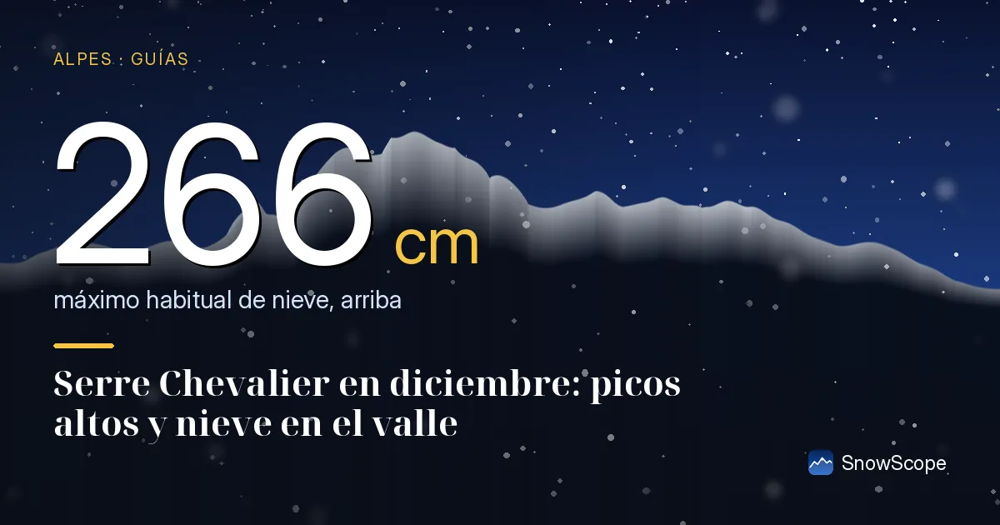

Serre Chevalier en diciembre: picos altos y nieve en el valle
Serre Chevalier es una gran estación de esquí en los Alpes franceses con 157 km de pistas señalizadas y 70 remontes. En diciembre, el espesor de la nieve varía mucho entre los picos altos y el fondo del valle. Si eliges la semana adecuada y te mantienes en altura, puedes encontrar buenas condiciones por un precio más bajo.
Consulta la previsión de nieve en tiempo real de Serre Chevalier en la app SnowScopeEspesor de nieve, alertas de nieve polvo y mapa 3D, gratis.
El rango vertical desde Briançon hasta Le Monêtier
Serre Chevalier es un largo valle de pueblos con una zona de esquí señalizada que cubre 157 km de pistas. La montaña tiene un gran desnivel de 1546 m. El remonte más bajo está a 1219 m y el más alto llega a 2765 m. Esto significa que hay una enorme diferencia en las condiciones entre la cima y la base. Hay 70 remontes señalizados que conectan los diferentes pueblos del valle.
En un diciembre habitual, la base a 1219 m tiene 30 cm de nieve. Sin embargo, la cima de los remontes a 2765 m suele tener 111 cm. Esta diferencia es importante para cualquiera que planifique un viaje a principios de temporada. A menudo puedes encontrar nieve profunda en la cima mientras que el fondo del valle aún tiene poca. Nuestro historial de nieve muestra que la base puede bajar hasta 4 cm, lo que ocurrió en la temporada 2015-16.

Elegir la semana adecuada para la nieve
El momento es muy importante en este largo valle. Nuestro historial de nieve de los últimos 46 inviernos muestra que la cima de la montaña es muy fiable. A partir del 8 de diciembre, la cima tiene 30 cm o más de nieve en el 100 % de los inviernos pasados. Si quieres 50 cm o más en la cima, eso sucede en el 87 % de los inviernos pasados entre el 8 y el 14 de diciembre. Sube al 96 % de los inviernos pasados, o sea unos 9 de cada 10 inviernos, después del 15 de diciembre.
La parte media de la montaña a 1992 m también es bastante segura. Tiene 30 cm o más en unos 9 de cada 10 inviernos durante la tercera semana de diciembre. La base a 1219 m es más difícil. En la primera semana de diciembre, la base solo tiene 30 cm o más en el 30 % de los inviernos pasados. Esto mejora al 67 % de los inviernos pasados hacia la última semana del mes. Si visitas pronto, deberías planear pasar la mayor parte de tu tiempo en las pistas más altas.
Precios de principios de temporada y perspectivas actuales
Puedes ahorrar dinero esquiando antes de las vacaciones de Navidad. Un pase de adulto de 6 días desde la apertura hasta el 18 de diciembre de 2026 cuesta 276,00 EUR. Si esperas hasta el 19 de diciembre de 2026, el precio del mismo pase de 6 días sube a 345,00 EUR. Alojarte en los pueblos más altos puede ayudarte a llegar al nivel de 1992 m donde la nieve es más constante.
Mirando la nieve ahora, el 13 de noviembre de 2026, hay 0 cm en la base y en la parte media, pero la cima ya tiene 14 cm. Las perspectivas de dos semanas para la parte media de la montaña y superior, del 13 de noviembre al 26 de noviembre de 2026, muestran un rango de 69 cm a 100 cm de nieve nueva. Esta es una señal positiva para el inicio de la temporada.
Comparación con los vecinos de los Alpes del Sur
Es útil comparar esta zona con Vars-Risoul, que está cerca. Vars-Risoul tiene una zona de esquí señalizada de 131 km de pistas y 38 remontes. Su remonte más alto está a 2722 m, que es ligeramente más bajo que Serre Chevalier. En un diciembre habitual, la cima de Vars-Risoul tiene 77 cm de nieve, mientras que Serre Chevalier tiene 111 cm en su pico. Serre Chevalier también tiene un desnivel mayor de 1546 m comparado con los 1090 m de Vars-Risoul.
En cuanto a costes, un pase de 6 días en Vars-Risoul cuesta 298 EUR para la temporada de invierno. Es más caro que el precio de principios de temporada de 276,00 EUR en Serre Chevalier. En la cima de Vars-Risoul, la probabilidad de tener 50 cm o más de nieve entre el 8 y el 14 de diciembre es del 65 %, que es menor que la probabilidad del 87 % en Serre Chevalier. Ambas estaciones tienen una probabilidad similar de tener 30 cm en la base a finales de diciembre, con un 74 % para Vars-Risoul y un 67 % para Serre Chevalier.
Un vistazo a la tendencia de nieve a largo plazo
Nuestro historial de nieve muestra una tendencia interesante en los últimos 46 inviernos. A mitad de los primeros 15 inviernos (1980-81 a 1994-95), el espesor medio de nieve en diciembre en la base era de 21 cm. A mitad de los últimos 15 inviernos (2011-12 a 2025-26), este promedio aumentó a 38 cm. En la parte media de la montaña, el promedio pasó de 46 cm a 63 cm. En la cima, subió de 92 cm a 106 cm.
Aunque algunos años son escasos de nieve, la tendencia general para la nieve de diciembre ha ido subiendo. El invierno pasado, en diciembre de 2025-26, el espesor medio en la cima fue de 102 cm, que está cerca del espesor habitual de 111 cm. El primer día habitual de nieve duradera en la cima es el 05 de octubre, mientras que en la base no suele llegar hasta el 28 de octubre. Esto confirma que el terreno más alto es el mejor lugar para los primeros giros.
Consejos para esquiadores
- Reserva tu viaje para la segunda o tercera semana de diciembre para obtener el precio del pase de 276,00 EUR.
- Concentra tu esquí por encima de 1992 m donde hay un 93 % de probabilidad de 30 cm de nieve después del 15 de diciembre.
- Consulta el boletín de aludes antes de salir de las pistas, especialmente si la cima alcanza sus niveles profundos de diciembre de 192 cm.
- Compra tu pase de 6 días en la web oficial antes del 19 de diciembre para evitar el aumento de precio a 345,00 EUR.
Más mapas (sitios externos)
Referencias y créditos
- Serre Chevalier, official booking site, ski passes 2026-27 reservation.serre-chevalier.com/achetez-vos-ski-pass-serre-chevalier-et-autres-prestations.html
- Risoul, official ski pass page, Forêt Blanche 2026-27 risoul.labellemontagne.com/fr/hiver/forfaits/risoul-foret-blanche/
- Risoul, official 6-day Forêt Blanche pass page 2026-27 risoul.labellemontagne.com/fr/hiver/forfaits/6-jours-foret-blanche/
- SnowScope, December snow at three heights and today's snow map snowscope.app/
Sobre estas cifras
Cifras de nieve: histórico de nieve de SnowScope, 46 inviernos pasados (1980-81 a 2025-26) a tres alturas de cada estación (un modelo del pasado corregido por altitud: una estimación para una zona, no mediciones de la estación); cifras de diciembre calculadas con los espesores diarios de esos inviernos. Nieve actual y tendencia a dos semanas: previsiones de SnowScope (tendencia de ECMWF y GFS, un rango, no una promesa). Remontes y pistas: cartografía de OpenSkiMap. Precios: las páginas oficiales de abajo, consultadas el 2026-11-13; los precios pueden cambiar, compruébalos antes de reservar.
Boletines oficiales de aludes: Météo-France – Bulletin d'estimation du risque d'avalanche
Citar este informe
Para investigación, docencia o prensa: cifras y gráficos reutilizables libremente bajo CC BY 4.0 con esta cita.
SnowScope (2026), Serre Chevalier en diciembre: picos altos y nieve en el valle, https://snowscope.app/blog/es/2026/11/serre-chevalier-december-ski-week-snow-history-2026.html, consultado el 2026-11-14
SnowScope (Atlas Labs). (2026, November 14). Serre Chevalier en diciembre: picos altos y nieve en el valle. SnowScope snow reports. https://snowscope.app/blog/es/2026/11/serre-chevalier-december-ski-week-snow-history-2026.html
BibTeX
@misc{snowscope2026serrechevalierdecembersk,
author = {{SnowScope (Atlas Labs)}},
title = {Serre Chevalier en diciembre: picos altos y nieve en el valle},
year = {2026},
month = nov,
howpublished = {\url{https://snowscope.app/blog/es/2026/11/serre-chevalier-december-ski-week-snow-history-2026.html}},
note = {Published 2026-11-14 20:51 UTC; accessed 2026-11-14}
}· CC BY 4.0 · Métodos, datos y herramientas →
Serre Chevalier: nieve y temperatura según la altura, este invierno vs el pasado (herramientas) →
Sigue Serre Chevalier
Gratis: un aviso cuando llega la nieve y la previsión cada mañana.